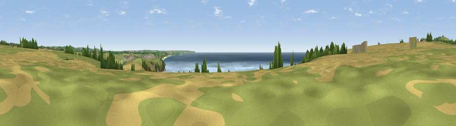

Viewpoint near Ashton
#6163 in England · top 15% of its area beats it · near AshtonWhere it is
The exact computed spot (SW 60850 26962). Click the marker for map links.
The view, rendered

A 360° render of this exact spot computed from the terrain model, tree cover and land cover — summer colours, afternoon light, calibrated against photographs of famous viewpoints. Real trees, hedges and buildings will differ in detail.
The panorama
Grey silhouette: terrain skyline in each direction (720 bearings, Earth curvature and refraction included). Dashed green: skyline with trees (+15 m) and buildings (+8 m) as obstacles. Blue strip: how far the ground is visible on each bearing.
Where the view opens
Wedge length = distance to the farthest visible ground on that bearing (vegetation-aware). Rings at 10, 25 and 50 km.
What fills the view
38% water · 30% grassland · 28% cropland · 2% woodland · 1% built-up
Angular shares of the visible panorama (visual magnitude), not map area. Landscape diversity 0.54 (0–1 Shannon).
Key numbers
More beautiful places nearby
The staircase of upgrades: each row has a higher view potential than everything closer. Driving times are estimates from straight-line distance, calibrated against real road routing — check an actual route before setting out.
| Place | Direction | Drive | Score |
|---|---|---|---|
| Viewpoint near Ashton | W · 1 km | ~2 min | 71.1 |
| Viewpoint near Ashton | NNW · 2 km | ~6 min | 81.3 |
| Tregonning Hill | NNW · 3 km | ~8 min | 83.0 |
| Rosewall Hill | NW · 17 km | ~30 min | 88.0 |
| Viewpoint near Combe Martin | NE · 156 km | ~178 min | 88.9 |
| Holdstone Hill | NE · 157 km | ~180 min | 90.2 |
| The Knoll | ENE · 201 km | ~220 min | 91.0 |
50.09452, -5.34510 · source: screening · position refined by local search. Computed location — check access rights before visiting.